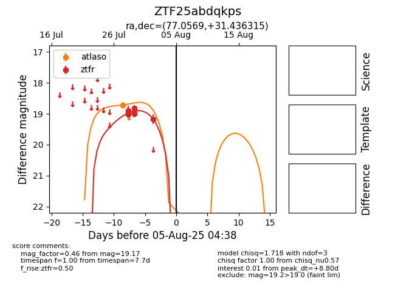

Target ZTF25abdqkps at 2025-08-05 04:38, see:
FINK: fink-portal.org/ZTF25abdqkps
Lasair: lasair-ztf.lsst.ac.uk/objects/ZTF25abdqkps
ALeRCE: alerce.online/object/ZTF25abdqkps
alt names
ZTF25abdqkps (ztf,fink)
coordinates:
equatorial (ra, dec) = (77.0569,+31.43632)
galactic (l, b) = (173.4185,-5.31941)
photometry
last atlaso=18.72, ztfr=19.17
1 atlaso, 7 ztfr detections
